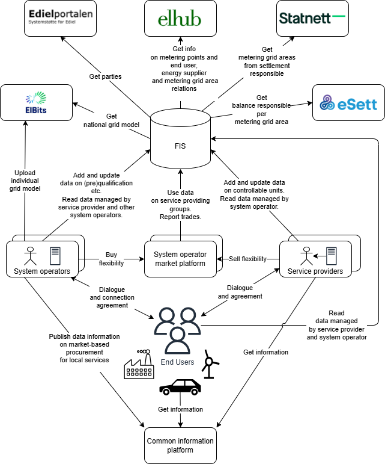

Flexibility Information System
This is the documentation for the Flexibility Information System (FIS) concept that is being developed in the context of the EuroFlex project in Norway. Elhub is leading the work as part of work package 4.
Work in progress
This documentation is a work in progress. Do not consider any of the details here as final or complete.
A flexibility information system, or flexibility register, is a IT system that is used to keep track of (register) data about flexible assets such as demand response resources, energy storage systems, and other controllable loads. The system will be a central part of a future flexibility value chain. We can think of it as a integration- and datahub in the value chain. The value proposal includes
- lowering barriers for service providers
- simplify use of flexible resurces in multiple markets
- increasing transparency and trust
- cost effectiveness through centralising common tasks
The following diagram illustrates the concept of a flexibility information system in the Norwegian context. There are many details in the diagram, but there are also still many unanswered questions. Consider it a starting point for discussion and one way to visualise the concept we are developing.

What does a Flexibility Information System do?
The heart of a flexibility information system to facilitate communication and data exchange between parties and systems in the value chain for flexibility services. The main parties are
system operators- that operates the electricity grid and procure flexibility servicesservice providers- that aggregate and offer flexibility services to system operatorsend users- the owners of the flexible assets that provide flexibility services
A flexibility information system can also take on additional tasks due to being shared infrastructure in the value chain. An example could be tasks related to imbalance settlement/adjustment and financial transfer.
Network Code on Demand Response (NC DR)
A network code on demand response is currently under development in the EU. We are basing our work on the proposed Flexibility information system as suggested in this regulation.
"flexibility information system" means a system to record at least the qualification of service providers, the product prequalification, product verification and grid prequalification of SPUs and SPGs and the switch of controllable units for the provision of balancing and local services and to exchange data for such processes;
- European Commision - Targeted Consultation - July 2025
- ACER Recommendation 01-2025 - March 2025
- ACER public consultation - September 2024
Centralised system or common access point?
The NC DR specifies that a flexibility information system should be operated and maintained in one of two ways. The first is a system operated and maintained by each procuring system operator with a common access point for service providers and system operators. The second is a centralised flexibility information system operated and maintained by an entity specified in national terms and conditions.
We are piloting a centralised FIS. We believe that such a setup has many benefits, e.g. reduced technical complexity by avoiding having many systems appear as one. The decentralised option also fails to adress the challenge of registering CUs only once. To achieve that every connecting (not the procuring) system operator must operate a FIS. Becuase of this the common access point approach also requires system operators - regardless of size and maturity - to operate a FIS. This is not a good fit for Norway where we have a wide variety of system operators.
Integrated CU and SP modules
Another aspect that is part of the NC DR is that they distinguish between Controllable Unit (CU) and Service Provider (SP) modules. We have decided to integrate these into a single system in our Flexibility Information System.
We believe that this is a good choice for a common flexibility information system in Norway as it is a small country with a small number of actors. It is also technically easier to have a single system.
Pilot Flexibility Register
We are piloting the Flexibility Information System as part of the EuroFlex project at flex-test.elhub.no. Participants in the EuroFlex project have access to the pilot system.
Warning
The Flexibility Information System is a prototype. As such, even though it offers authentication and authorisation features, it should not be considered as a production-level system. Please make sure the data used while testing is fictitious and does not contain any sensitive information (e.g., health data, sexual orientation, etc).
Our system stores read-only historical data for some of its resources. This means that wrong data will remain in the system even though the last version of the resource is corrected. Should you inadvertently add sensitive data to a resource, please contact us so that we can manually clean the problematic records.